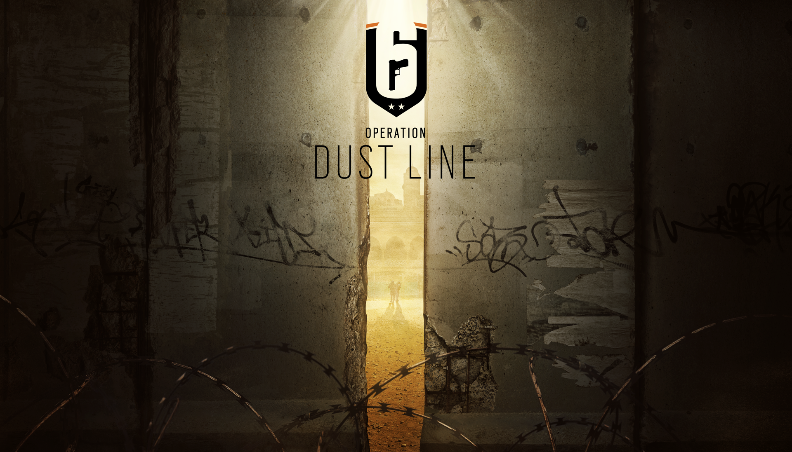
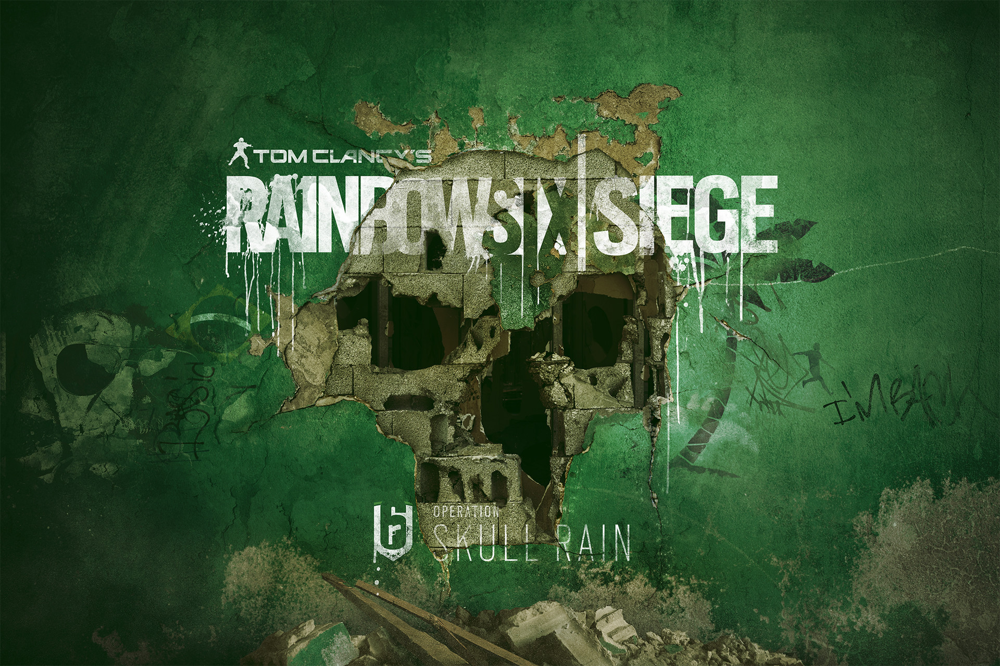
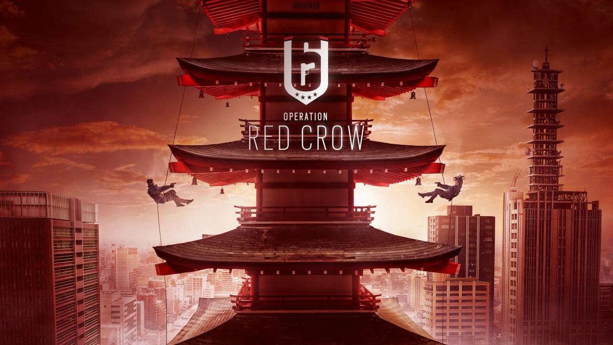
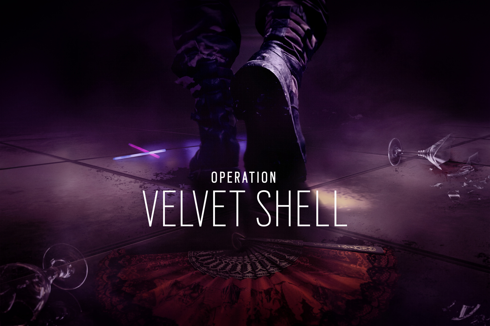
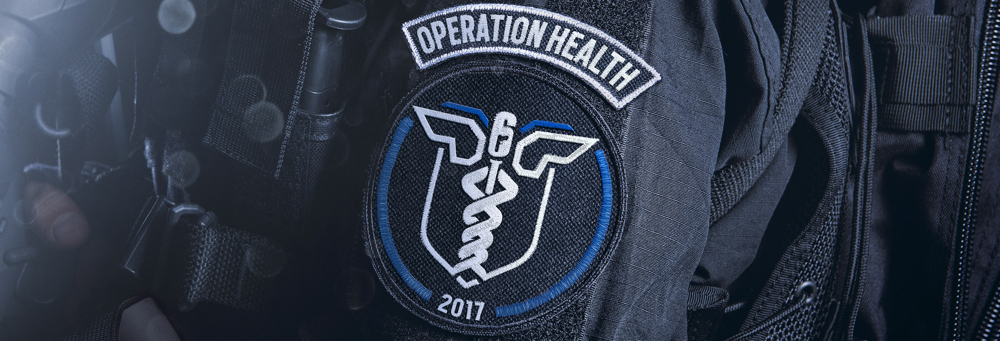
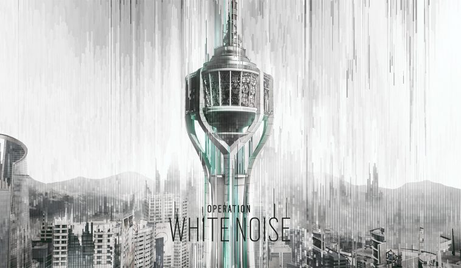

Tom Clancy's Rainbow Six Siege est un jeu d'action tactique appartenant à la fameuse série du même nom. Cet épisode est principalement axé sur le multijoueur et l'importance du jeu en équipe, avec des environnements facilement destructibles.
Le jeu est officiellement annoncé lors de la conférence pré-E3 2014 d'Ubisoft grâce à un trailer qui montre un scénario de sauvetage d'otages. Le jeu est considéré comme le successeur de Tom Clancy's Rainbow Six: Patriots, qui a été annulé par Ubisoft.
Le 12 mars 2015, Ubisoft annonce qu'une alpha fermée est en développement, prévue pour être publiée exclusivement pour Windows. Une bêta fermée du jeu est ensuite disponible pour Windows, PlayStation 4 et Xbox One à partir du 24 septembre 2015, avec un accès garanti à celle-ci pour les personnes ayant pré-commandé le jeu. Ces périodes de test sont réalisées pour tester notamment l'équilibrage du système de jeu.
Lors de l'E3 2015, Ubisoft publie de nouveaux trailers du jeu montrant certains des éléments et des environnements du jeu. Ubisoft a également annoncé que le mode Terrorist Hunt, un mode multijoueur coopératif introduit dans les précédents jeux de Rainbow Six, est de retour dans ce nouvel opus.
Le jeu est initialement prévu pour le 13 octobre 2015, avant d'être repoussé au 1er décembre 2015 sur PlayStation 4, Xbox One et Windows10.
Rainbow Six: Siege est un jeu de tir tactique où le joueur incarne différents opérateurs de treize unités de forces spéciales qui constitue en tout l’équipe Rainbow : le SWAT américain, le SAS anglais, le GSG-9 allemand, les Spetsnaz russe, le GIGN français, le JTF-2 canadien, les Navy SEALs américains, le BOPE brésilien, le SAT japonais, le GEO espagnole, le SDU de Hong Kong, le GROM polonais et le 707th SMB coréen. Différents modes de jeu sont disponibles, comme le mode qui consiste à libérer un otage ou à le protéger contre des assauts terroristes. Comme les autres titres de la série, il se concentre fortement sur le jeu en équipe et le réalisme des interventions.
Cependant, il existe de grandes différences par rapport à d'anciennes versions du jeu, avec un accent multijoueur important et des environnements entièrement destructibles. En tout, 10 cartes sont disponibles lors de la sortie du jeu.
Pour la première fois dans un jeu Tom Clancy’s Rainbow Six, les joueurs mènent des sièges, un nouveau style d’attaque où les ennemis peuvent transformer leur environnement en véritables forteresses modernes afin de garder l'avantage sur les équipes Rainbow Six qui donnent l’assaut pour briser leur position. Le système de jeu incite les joueurs à fortifier leur position, en renforçant les murs, en plaçant des barbelés afin de ralentir leurs ennemis, en déployant des mines et des boucliers, ou pour percer les défenses ennemies, en utilisant des drones d’observation ou en descendant en rappel.
Tom Clancy's Rainbow Six Siege
Tom Clancy's Rainbow Six Siege : Opération Black Ice
Tom Clancy's Rainbow Six Siege : Opération Dust Line

Tom Clancy's Rainbow Six Siege : Opération Skull Rain

Tom Clancy's Rainbow Six Siege : Opération Red Crow

Tom Clancy's Rainbow Six Siege : Opération Velvet Shell

Tom Clancy's Rainbow Six Siege : Opération Health

Tom Clancy's Rainbow Six Siege : Opération Blood Orchid
Tom Clancy's Rainbow Six Siege : Opération White Noise

Maîtrisez l’art de la destruction et les gadgets dans Tom Clancy's Rainbow Six Siege. Faites face à des combats rapprochés intenses, affrontements mortels, tactiques, jeu d’équipe et actions explosives à chaque moment. Découvrez une nouvelle ère d'échanges de tir féroces et une stratégie experte dans la lignée des anciens volets de la série Tom Clancy’s Rainbow Six.
Participez à un nouveau style d'attaque avec un niveau de destruction et de gadgets sans parallèle.
En défense, coordonnez avec votre équipe pour transformer vos environnements en forteresses. Posez des pièges, fortifiez et créez des systèmes défensifs pour empêcher les ennemis de pénétrer.
En attaque, menez votre équipe à travers des corridors étroits, des portes barricadées et des murs renforcés. Mélangez cartes tactiques, drones d'observations, la descente en rappel et plus pour planifier l'assaut et neutraliser la menace.
Choisissez parmi des dizaines d'agents hautement entrainés des Forces spéciales des quatre coins du monde. Déployez la dernière technologie pour suivre les mouvements ennemis. Faites éclater les murs pour ouvrir de nouvelles lignes de tir. Pénétrez les plafonds et les sols pour créer de nouveaux points d'accès. Utilisez toute arme et gadget de votre arsenal meurtrier pour trouver, manipuler et détruire vos ennemis et les environnements qui les entourent.
Découvrez de nouvelles stratégies et tactiques pendant que Rainbow Six Siege évolue avec le temps. Changez les règles de Siege avec chaque mise à jour qui comprend de nouveaux agents, armes, gadgets et cartes. Évoluez avec le paysage en changement constant aux côtés de vos amis et devenez les agents les plus expérimentés et dangereux.
Entrez en compétition contre des joueurs autour du monde dans des matches classés. Rassemblez votre meilleure équipe et rejoignez la communauté compétitive dans des tournois hebdomadaires ou regardez les meilleures équipes professionnelles se battre dans la Ligue pro de Rainbow Six Siege.